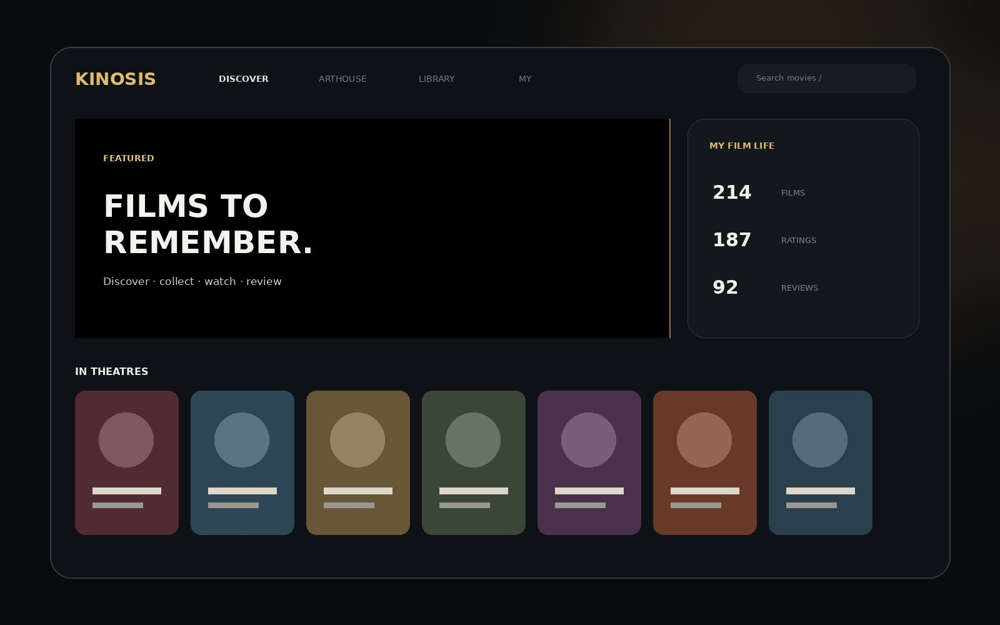
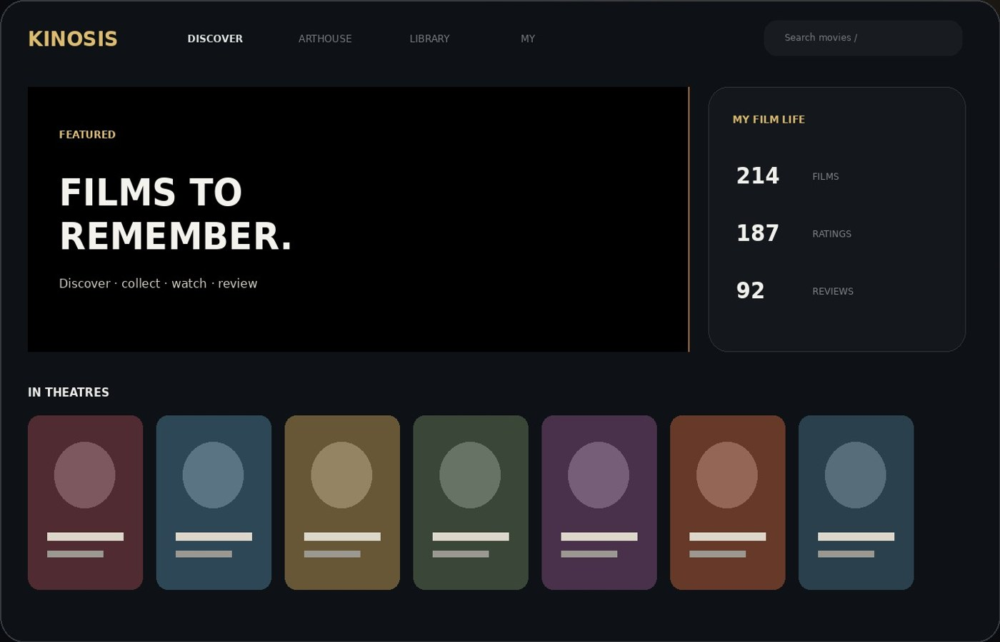
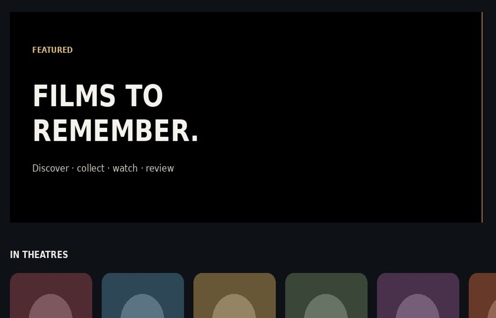
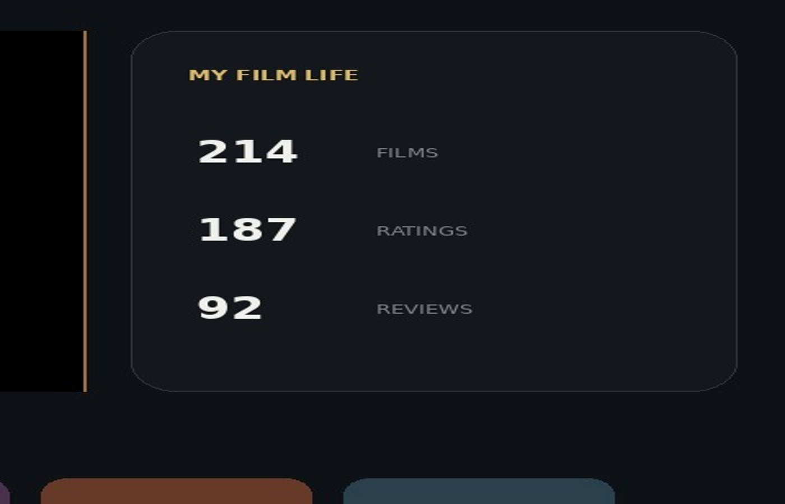

05 / Film Library · Web Service
KINOSIS
영화를 발견하고, 보고, 기록하고, 다시 꺼내보는 라이브러리
PROJECT OVERVIEW
영화는 여러 서비스에 흩어져 있지만, 감상 기록은 한 사람의 경험입니다.
KINOSIS는 극장·OTT·구매 소장으로 흩어진 영화 경험을 하나의 개인 라이브러리로 묶는 웹 서비스입니다. 단순한 목록 관리가 아니라 발견, 감상 가능 여부, 기록, 재발견이 한 흐름으로 이어지는 것을 목표로 설계했습니다.
DISCOVER / ARTHOUSE / LIBRARY / MY를 분리해 ‘무엇을 볼까’, ‘무엇을 모았나’, ‘나는 무엇을 봐왔나’라는 서로 다른 질문을 각 화면이 담당하도록 구성했습니다.
- TYPE
- Personal Product
- ROLE
- Product Design · UX · Frontend
- STACK
- HTML · CSS · JavaScript · Netlify · Supabase
- STATUS
- W.I.P.
PRODUCT / UX
설계와 구현
발견과 관리를 같은 화면 논리로 만들지 않았습니다.
DISCOVER는 영화를 시각적으로 판매하는 공간이고, LIBRARY는 많은 영화를 빠르게 관리하는 공간입니다. 같은 카드 크기와 정보량을 강제로 공유하면 두 목적 모두 약해지기 때문에 화면 목적에 따라 밀도와 인터랙션을 분리했습니다.

검색은 카탈로그가 아니라 영화 전체를 향합니다.
주간 추천 카탈로그와 전역 검색을 분리하고, 사용자가 저장하거나 기록한 영화는 외부 카탈로그 갱신과 무관하게 개인 라이브러리에 남도록 데이터 구조를 설계했습니다.

‘볼 수 있는가’와 ‘보고 싶은가’를 연결합니다.
사용자가 구독 중인 서비스와 한국 기준 제공 정보를 교차해 Watchlist를 실제 감상 가능성으로 다시 정렬합니다. 기록 기능은 별점과 리뷰를 감상 이벤트에 묶어 재감상도 별개의 이력으로 남길 수 있게 했습니다.
